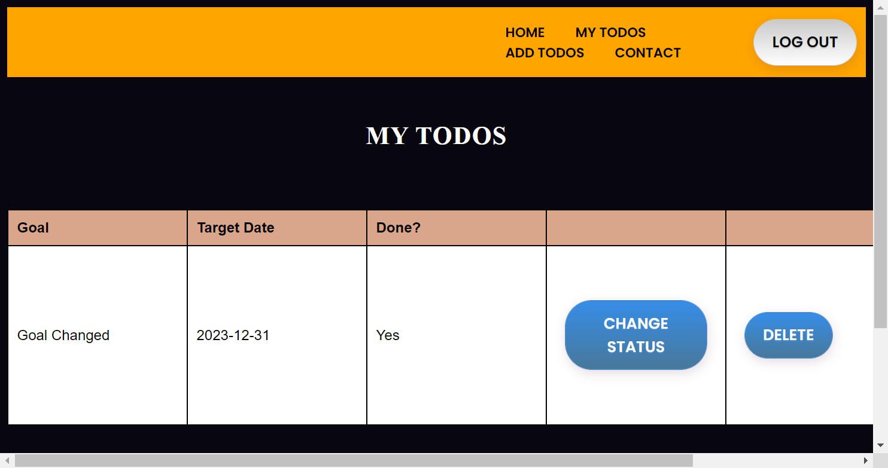
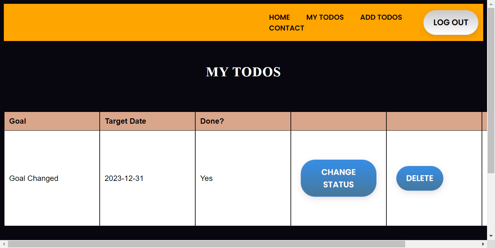

-
List and View Todos
11:34:26 AM / 00:00:13:294 Fail
List and View Todos
01.05.2023 11:34:26 AM 01.05.2023 11:34:39 AM 00:00:13:294 · #test-id=1PassChange Status of TodoPassChange Status of Todosteps.Hooks.before(io.cucumber.java.Scenario)Change Status of Todo Started...Given I am in "chrome" browser and logged in with credentials "nagi" and "dummy"When I click on My TodosAnd I click on Change StatusThen Todo Done Column should changesteps.Hooks.after(io.cucumber.java.Scenario)Change Status of Todo Success...PassChange Status of Todosteps.Hooks.before(io.cucumber.java.Scenario)Change Status of Todo Started...Given I am in "Edge" browser and logged in with credentials "nagi" and "dummy"When I click on My TodosAnd I click on Change StatusThen Todo Done Column should changesteps.Hooks.after(io.cucumber.java.Scenario)Change Status of Todo Success...FailUpdate TodoFailUpdate Todosteps.Hooks.before(io.cucumber.java.Scenario)Update Todo Started...Given I am in "Edge" browser and logged in with credentials "nagi" and "dummy"When I click on My TodosAnd I click on updateThen it should redirect to add-todo pageWhen i edit the goal as "Goal Changed" and "31-12-2023" and click on addThen the i should redirect to my todos page and goal should be editedsteps.Hooks.after(io.cucumber.java.Scenario)Update TodoUpdate Todo Failed !Update Todo Success...FailUpdate Todosteps.Hooks.before(io.cucumber.java.Scenario)Update Todo Started...Given I am in "chrome" browser and logged in with credentials "nagi" and "dummy"When I click on My TodosAnd I click on updateThen it should redirect to add-todo pageWhen i edit the goal as "Goal Changed" and "31-12-2023" and click on addThen the i should redirect to my todos page and goal should be editedsteps.Hooks.after(io.cucumber.java.Scenario)Update TodoUpdate Todo Failed !Update Todo Success...PassView TodosPassView Todossteps.Hooks.before(io.cucumber.java.Scenario)View Todos Started...Given I am in "Edge" browser and logged in with credentials "nagi" and "dummy"When I click on My TodosThen List of Todos should be visiblesteps.Hooks.after(io.cucumber.java.Scenario)View Todos Success...PassView Todossteps.Hooks.before(io.cucumber.java.Scenario)View Todos Started...Given I am in "chrome" browser and logged in with credentials "nagi" and "dummy"When I click on My TodosThen List of Todos should be visiblesteps.Hooks.after(io.cucumber.java.Scenario)View Todos Success... -
Login Feature
11:34:26 AM / 00:00:11:963 Pass
Login Feature
01.05.2023 11:34:26 AM 01.05.2023 11:34:38 AM 00:00:11:963 · #test-id=8PassLogin With Negative ScenariosPassLogin With Negative Scenariossteps.Hooks.before(io.cucumber.java.Scenario)Login With Negative Scenarios Started...Given I am in "Edge" browser and navigated to root or Login pageNavigated to WebAppWhen I Enter "sai" and "dummy"Then I should get errorsteps.Hooks.after(io.cucumber.java.Scenario)Login With Negative Scenarios Success...PassLogin With Negative Scenariossteps.Hooks.before(io.cucumber.java.Scenario)Login With Negative Scenarios Started...Given I am in "chrome" browser and navigated to root or Login pageNavigated to WebAppWhen I Enter "nagi" and "dummy123"Then I should get errorsteps.Hooks.after(io.cucumber.java.Scenario)Login With Negative Scenarios Success...PassLogin With positive ScenariosPassLogin With positive Scenariossteps.Hooks.before(io.cucumber.java.Scenario)Login With positive Scenarios Started...Given I am in "chrome" browser and navigated to root or Login pageNavigated to WebAppWhen I Enter "nagi" and "dummy"Then I should Redirect to Welcome Page with "nagi"steps.Hooks.after(io.cucumber.java.Scenario)Login With positive Scenarios Success...PassLogin With positive Scenariossteps.Hooks.before(io.cucumber.java.Scenario)Login With positive Scenarios Started...Given I am in "Edge" browser and navigated to root or Login pageNavigated to WebAppWhen I Enter "nagi" and "dummy"Then I should Redirect to Welcome Page with "nagi"steps.Hooks.after(io.cucumber.java.Scenario)Login With positive Scenarios Success...
-
java.lang.AssertionError
2 tests
java.lang.AssertionError
2 failedStatus Timestamp TestName Fail 11:34:34 AM Then the i should redirect to my todos page and goal should be edited List and View Todos.Update Todo.Then the i should redirect to my todos page and goal should be editedFail 11:34:35 AM Then the i should redirect to my todos page and goal should be edited List and View Todos.Update Todo.Then the i should redirect to my todos page and goal should be edited
Started
Jan 5, 2023 11:34:25 AM
Ended
Jan 5, 2023 11:34:39 AM
Features Passed
1
Features Failed
1
Features
Scenarios
Steps
Timeline